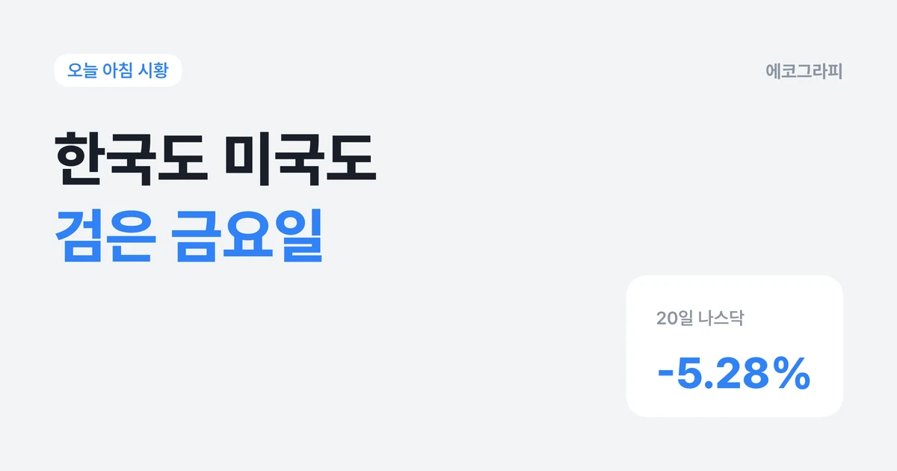
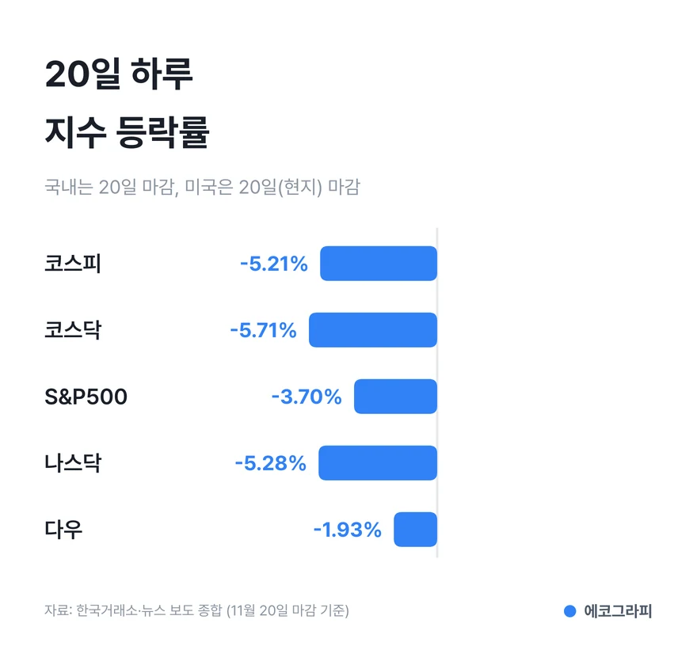
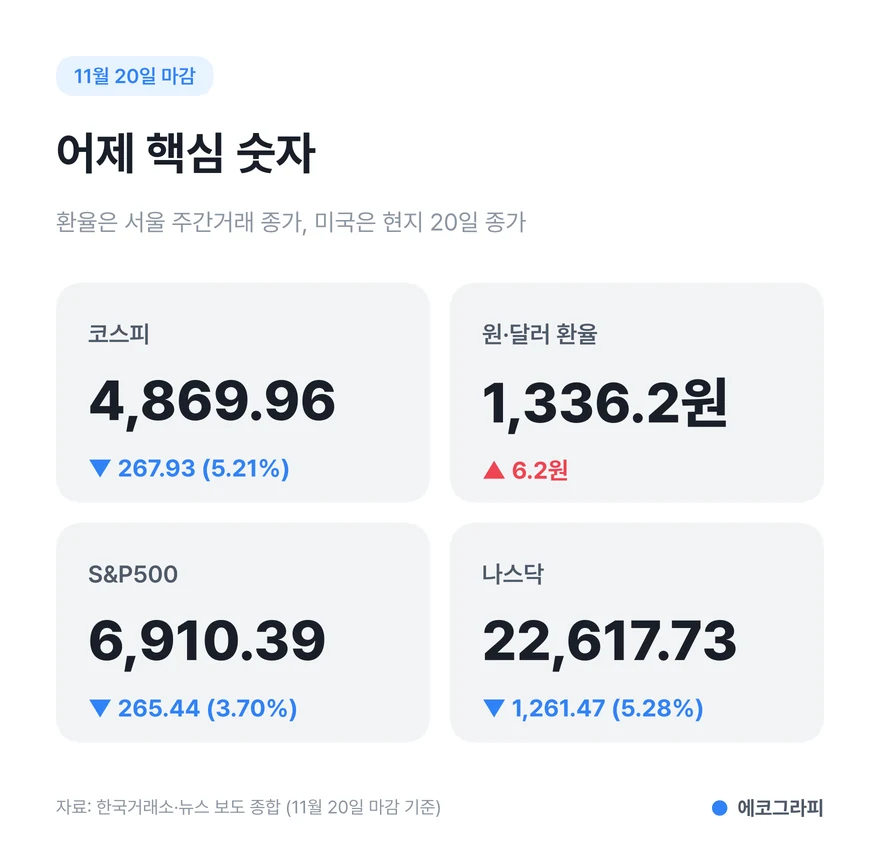
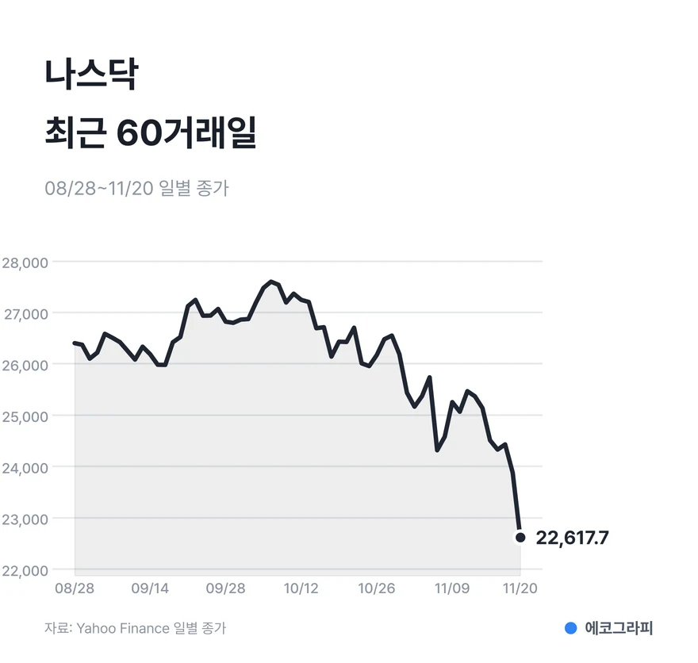
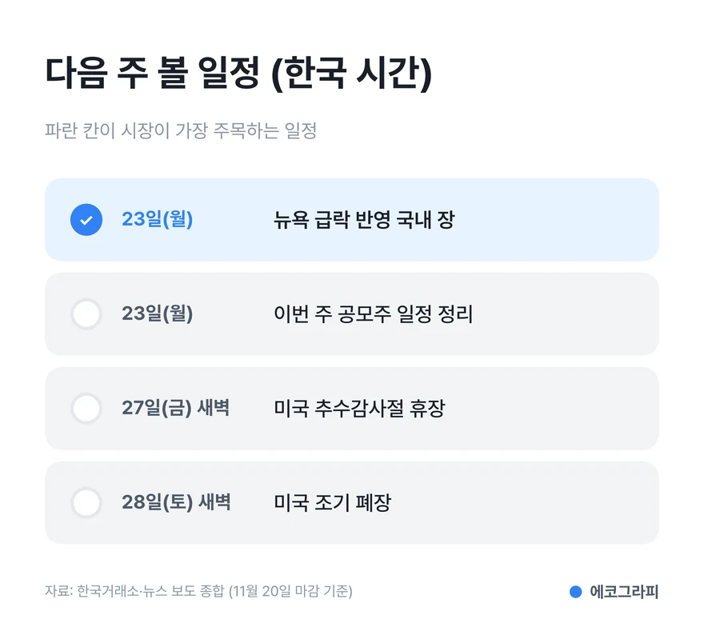

20일 코스피는 267.93포인트(5.21%) 내린 4,869.96에 마감했어요. 전날 뉴욕 급락 영향으로 4,928.51에 출발했고, 장중 4,831.69까지 밀렸어요. 코스닥은 39.13포인트(5.71%) 내린 645.68이었어요. 코스피는 오전 11시 54분, 코스닥은 오후 1시 28분에 각각 매도 사이드카가 발동됐어요. 마감 수준은 지난 1월 16일 이후 약 10개월 만에 가장 낮아요.
원·달러 환율은 1,336.2원으로 6.2원 올랐어요. 장중엔 1,340.3원까지 갔어요. 장 마감 직후 상황은 어제 저녁 속보: 코스피·코스닥 5%대 급락, 양 시장 매도 사이드카에, 같은 날 상장한 하나에어로다이내믹스의 첫날 흐름은 어제 상장일 글에 정리했어요.

미국은 나스닥 22,617.73(-5.28%), S&P500 6,910.39(-3.70%), 다우 48,147.33(-1.93%)로 마감했어요. S&P500은 7거래일 연속 내렸어요. 나스닥은 올해 오른 몫을 모두 반납해 연초보다 낮아졌어요.
이렇게 시장이 크게 흔들릴 땐 공포지수 VIX도 함께 보면 좋아요. VIX를 읽는 법은 VIX(변동성지수) 글에서 쉽게 풀었어요. 레버리지 ETF가 왜 이렇게 크게 흔들리는지는 오늘의 경제 용어 레버리지 ETF에서 다뤘어요.

이번 주 미국은 나스닥 -10.0%, S&P500 -8.6%, 다우 -8.0%였어요. S&P500과 다우는 전고점에서 10% 넘게 내려와 '조정 국면'에 들어섰다는 평가가 나왔어요. 국내도 코스피 시가총액이 한 주 동안 약 7.9% 줄었어요.
한 줄 정리: 이번 주 시장을 움직인 건 'AI 투자가 정말 돈이 될까'라는 의심이었어요. 앤스로픽 상장, AMD·엔비디아 관련 보도가 잇따르며 반도체와 기술주가 한꺼번에 흔들렸어요.
코스피는 이번 주 5,100선 위로 잠깐 돌아왔다가 금요일 하루 만에 4,800선으로 내려왔어요.
나스닥은 최근 고점에서 계속 내려오다 금요일 하락 폭이 크게 커졌어요.

월요일 국내 장은 금요일 밤 뉴욕 급락이 반영되는 첫날이에요. 반도체주가 미국 반도체 급락을 얼마나 따라가는지, 외국인 순매도가 7거래일째 이어지는지 봐야 해요. 다음 주 목요일(현지)은 미국 추수감사절이라 뉴욕 증시가 쉬고, 금요일은 일찍 문을 닫아요. 거래가 적은 날엔 작은 소식에도 크게 움직일 수 있어요.

주말에 해볼 것: 내 계좌에서 반도체·AI 관련 비중이 얼마나 되는지 한 번 살펴보세요. 같은 이유로 함께 움직이는 종목이 많으면, 이번 주처럼 한꺼번에 흔들릴 수 있어요.
아니에요. 사이드카는 프로그램 매매(컴퓨터가 자동으로 내는 대량 주문)만 5분 동안 멈추는 장치예요. 일반 투자자 주문은 계속 할 수 있어요. 시장 전체 거래를 멈추는 건 서킷브레이커예요.
보통 지수가 직전 고점보다 10% 이상 내린 상태를 말해요. 20% 이상 내리면 '약세장'이라고 불러요.
아니요. 한국 증시는 평소처럼 열려요. 다만 미국 장이 쉬면 다음 날 아침 참고할 해외 소식이 적어져요.
외국인 투자자가 산 금액보다 판 금액이 6거래일 연속 더 많았다는 뜻이에요. 환율이 오르는 것과 함께 나타나는 경우가 많아요.
※ 2026년 11월 기준으로 정리한 글입니다. 세율·제도는 바뀔 수 있으니 거래 전 증권사·국세청 안내를 한 번 더 확인하세요. 특정 종목·상품의 매수·매도 권유가 아닙니다.